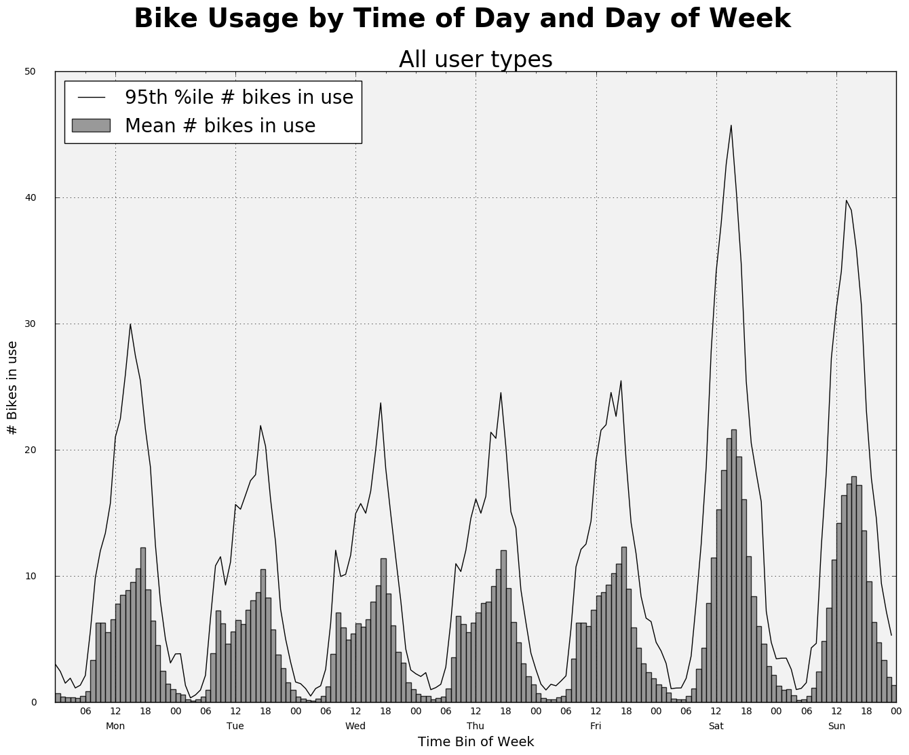
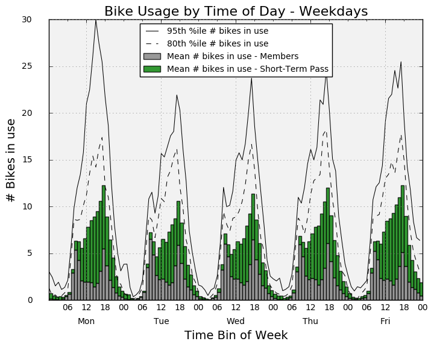
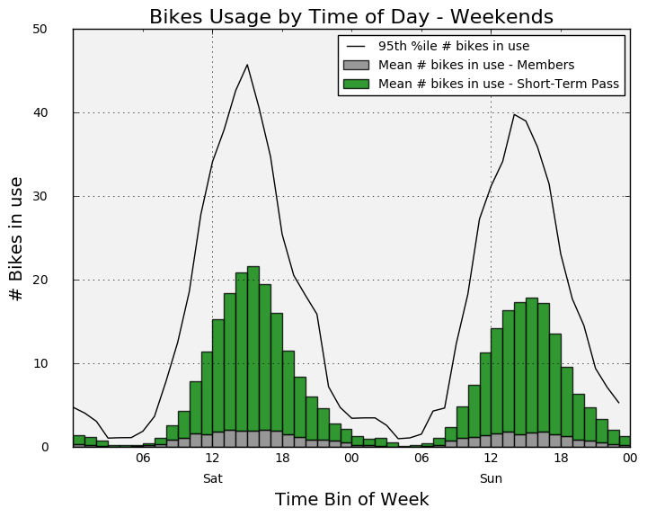
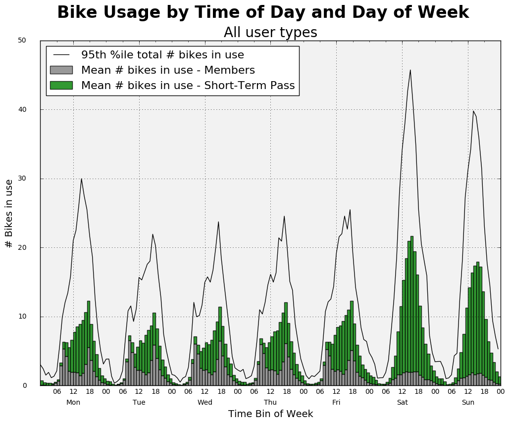

Analyzing bike usage by time of day and day of week¶
For anyone managing a bike share system, understanding the patterns of bike use is pretty important. Capacity planning, in terms of the number of bikes needed, can be aided by analysis of the number of bikes in use by time of day and day of week. In this notebook, I show how the package hillmaker can be used to create statistical plots of bike use. Hillmaker was originally developed for use in healthcare capacity planning problems but can be used for any service system in which start times and stop times are available. This cycle share dataset is ideal.
In this first example we’ll compare bike use patterns by members vs. short-term pass holders. Our goal is to compute the mean and percentiles of the number of bikes in use by hour of day and day of week.
Module imports¶
To run Hillmaker we only need to import a few modules. Since the main Hillmaker function uses Pandas DataFrames for both data input and output, we need to import pandas in addition to hillmaker.
[21]:
import pandas as pd
import hillmaker as hm
We’ll use matplotlib for the plotting. There’s some trickiness involved in x-axis formatting that can be solved with a DateFormatter.
[22]:
import matplotlib as mpl
import matplotlib.pyplot as plt
from matplotlib.dates import DateFormatter
[23]:
%matplotlib inline
Read trip data file¶
Read the trip data from a csv file into a DataFrame and tell Pandas which fields to treat as dates.
[24]:
file_trip_data = './cycle-share-dataset/trip.csv'
[25]:
trip_df_raw = pd.read_csv(file_trip_data, parse_dates=['starttime','stoptime'], error_bad_lines=False)
trip_df_raw.info() # Check out the structure of the resulting DataFrame
b'Skipping line 50794: expected 12 fields, saw 20\n'
<class 'pandas.core.frame.DataFrame'>
RangeIndex: 286857 entries, 0 to 286856
Data columns (total 12 columns):
trip_id 286857 non-null int64
starttime 286857 non-null datetime64[ns]
stoptime 286857 non-null datetime64[ns]
bikeid 286857 non-null object
tripduration 286857 non-null float64
from_station_name 286857 non-null object
to_station_name 286857 non-null object
from_station_id 286857 non-null object
to_station_id 286857 non-null object
usertype 286857 non-null object
gender 181557 non-null object
birthyear 181553 non-null float64
dtypes: datetime64[ns](2), float64(2), int64(1), object(7)
memory usage: 26.3+ MB
There are some duplicate rows in this dataset. Let’s get rid of them.
[26]:
trip_df = trip_df_raw.drop_duplicates()
[27]:
trip_df.info()
<class 'pandas.core.frame.DataFrame'>
Int64Index: 236065 entries, 0 to 286856
Data columns (total 12 columns):
trip_id 236065 non-null int64
starttime 236065 non-null datetime64[ns]
stoptime 236065 non-null datetime64[ns]
bikeid 236065 non-null object
tripduration 236065 non-null float64
from_station_name 236065 non-null object
to_station_name 236065 non-null object
from_station_id 236065 non-null object
to_station_id 236065 non-null object
usertype 236065 non-null object
gender 146171 non-null object
birthyear 146167 non-null float64
dtypes: datetime64[ns](2), float64(2), int64(1), object(7)
memory usage: 23.4+ MB
[28]:
trip_df.head(3)
[28]:
| trip_id | starttime | stoptime | bikeid | tripduration | from_station_name | to_station_name | from_station_id | to_station_id | usertype | gender | birthyear | |
|---|---|---|---|---|---|---|---|---|---|---|---|---|
| 0 | 431 | 2014-10-13 10:31:00 | 2014-10-13 10:48:00 | SEA00298 | 985.935 | 2nd Ave & Spring St | Occidental Park / Occidental Ave S & S Washing... | CBD-06 | PS-04 | Member | Male | 1960.0 |
| 1 | 432 | 2014-10-13 10:32:00 | 2014-10-13 10:48:00 | SEA00195 | 926.375 | 2nd Ave & Spring St | Occidental Park / Occidental Ave S & S Washing... | CBD-06 | PS-04 | Member | Male | 1970.0 |
| 2 | 433 | 2014-10-13 10:33:00 | 2014-10-13 10:48:00 | SEA00486 | 883.831 | 2nd Ave & Spring St | Occidental Park / Occidental Ave S & S Washing... | CBD-06 | PS-04 | Member | Female | 1988.0 |
[29]:
trip_df.tail(5)
[29]:
| trip_id | starttime | stoptime | bikeid | tripduration | from_station_name | to_station_name | from_station_id | to_station_id | usertype | gender | birthyear | |
|---|---|---|---|---|---|---|---|---|---|---|---|---|
| 286852 | 255241 | 2016-08-31 23:34:00 | 2016-08-31 23:45:00 | SEA00201 | 679.532 | Harvard Ave & E Pine St | 2nd Ave & Spring St | CH-09 | CBD-06 | Short-Term Pass Holder | NaN | NaN |
| 286853 | 255242 | 2016-08-31 23:48:00 | 2016-09-01 00:20:00 | SEA00247 | 1965.418 | Cal Anderson Park / 11th Ave & Pine St | 6th Ave S & S King St | CH-08 | ID-04 | Short-Term Pass Holder | NaN | NaN |
| 286854 | 255243 | 2016-08-31 23:47:00 | 2016-09-01 00:20:00 | SEA00300 | 1951.173 | Cal Anderson Park / 11th Ave & Pine St | 6th Ave S & S King St | CH-08 | ID-04 | Short-Term Pass Holder | NaN | NaN |
| 286855 | 255244 | 2016-08-31 23:49:00 | 2016-09-01 00:20:00 | SEA00047 | 1883.299 | Cal Anderson Park / 11th Ave & Pine St | 6th Ave S & S King St | CH-08 | ID-04 | Short-Term Pass Holder | NaN | NaN |
| 286856 | 255245 | 2016-08-31 23:49:00 | 2016-09-01 00:20:00 | SEA00442 | 1896.031 | Cal Anderson Park / 11th Ave & Pine St | 6th Ave S & S King St | CH-08 | ID-04 | Short-Term Pass Holder | NaN | NaN |
Overall ride counts by user type¶
Let’s create a simple function to summarize factor variables such as usertype.
[30]:
def factorsummary(series):
print(series.name)
x_null = series.isnull().sum()
x_notnull = series.count()
x_tot = x_notnull + x_null
print("total\t{}".format(x_tot))
print("nonnull\t{}".format(x_notnull))
print("null\t{}\n".format(x_null))
print(series.value_counts())
[31]:
factorsummary(trip_df['usertype'])
usertype
total 236065
nonnull 236065
null 0
Member 146171
Short-Term Pass Holder 89894
Name: usertype, dtype: int64
Creating occupancy summaries¶
The primary function in hillmaker is called make_hills. Let’s get a little help on this function.
[32]:
help(hm.make_hills)
Help on function make_hills in module hillmaker.hills:
make_hills(scenario_name, stops_df, infield, outfield, start_analysis, end_analysis, catfield='', total_str='Total', bin_size_minutes=60, cat_to_exclude=None, totals=True, export_csv=True, export_path='.', return_dataframes=False, verbose=0)
Compute occupancy, arrival, and departure statistics by time bin of day and day of week.
Main function that first calls `bydatetime.make_bydatetime` to calculate occupancy, arrival
and departure values by date by time bin and then calls `summarize.summarize_bydatetime`
to compute the summary statistics.
Parameters
----------
scenario_name : string
Used in output filenames
stops_df : DataFrame
Base data containing one row per visit
infield : string
Column name corresponding to the arrival times
outfield : string
Column name corresponding to the departure times
start_analysis : datetime-like, str
Starting datetime for the analysis (must be convertible to pandas Timestamp)
end_analysis : datetime-like, str
Ending datetime for the analysis (must be convertible to pandas Timestamp)
catfield : string, optional
Column name corresponding to the category. If none is specified, then only overall occupancy is analyzed.
Default is ''
total_str : string, optional
Column name to use for the overall category, default is 'Total'
bin_size_minutes : int, optional
Number of minutes in each time bin of the day, default is 60
cat_to_exclude : list, optional
Categories to ignore, default is None
totals : bool, optional
If true, overall totals are computed. Else, just category specific values computed. Default is True.
export_csv : bool, optional
If true, results DataFrames are exported to csv files. Default is True.
export_path : string, optional
Destination path for exported csv files, default is current directory
return_dataframes : bool, optional
If true, dictionary of DataFrames is returned. Default is False.
verbose : int, optional
The verbosity level. The default, zero, means silent mode. Higher numbers mean more output messages.
Returns
-------
dict of DataFrames
The bydatetime and all summaries.
Only returned if return_dataframes=True
Example:
{'bydatetime': bydt_df,
'occupancy': occ_stats_summary,
'arrivals': arr_stats_summary,
'departures': dep_stats_summary,
'tot_occ': occ_stats_summary_cat,
'tot_arr': arr_stats_summary_cat,
'tot_dep': dep_stats_summary_cat}
You can read more about Hillmaker at http://hselab.org/hillmaker-python-released.html. It’s free and open source.
Specify values for all the required inputs:¶
[33]:
# Required inputs
# ---------------
# scenario name
scenario = 'bikeshare_1'
# Column name in trip_df corresponding to the bike rental time
in_fld_name = 'starttime'
# Column name in trip_df corresponding to the bike return time
out_fld_name = 'stoptime'
# Column name in trip_df corresponding to some categorical field for grouping
cat_fld_name = 'usertype'
# Start and end times for the analysis. We'll just use data from 2015.
start = '1/1/2015'
end = '12/31/2015 23:45'
# Optional inputs
# ---------------
# Verbosity level of hillmaker messages
verbose = 1
# Path to destination location for csv output files produced by hillmaker
output = './output'
Now we’ll call the main make_hills function.
[34]:
hills_1 = hm.make_hills(scenario, trip_df, in_fld_name, out_fld_name, start, end, cat_fld_name,
export_path = output, verbose=verbose, return_dataframes=True)
min of intime: 2014-10-13 10:31:00
max of outtime: 2016-09-01 00:20:00
Datetime DataFrame created (seconds): 54.1223
Summaries by datetime created (seconds): 5.1214
Summaries by category created (seconds): 0.0638
Summaries exported to csv (seconds): 0.3367
Total time (seconds): 59.6452
[35]:
hills_1.keys()
[35]:
dict_keys(['bydatetime', 'occupancy', 'tot_arr', 'arrivals', 'tot_occ', 'tot_dep', 'departures'])
We are primarily interested in the occupancy (i.e. number of bikes in use) DataFrame contained in the hills_1 dictionary returned by make_hills. You can also go to the specified output folder to see a csv export of all of the returned DataFrames.
[36]:
occ_df = hills_1['occupancy']
occ_df.info()
<class 'pandas.core.frame.DataFrame'>
MultiIndex: 504 entries, (Member, 0, 0) to (Total, 6, 23)
Data columns (total 22 columns):
count 504 non-null float64
cv 504 non-null float64
kurt 504 non-null float64
max 504 non-null float64
mean 504 non-null float64
min 504 non-null float64
p50 504 non-null float64
p55 504 non-null float64
p60 504 non-null float64
p65 504 non-null float64
p70 504 non-null float64
p75 504 non-null float64
p80 504 non-null float64
p85 504 non-null float64
p90 504 non-null float64
p95 504 non-null float64
p975 504 non-null float64
p99 504 non-null float64
sem 504 non-null float64
skew 504 non-null float64
stdev 504 non-null float64
var 504 non-null float64
dtypes: float64(22)
memory usage: 88.7+ KB
[37]:
occ_df.head()
[37]:
| count | cv | kurt | max | mean | min | p50 | p55 | p60 | p65 | ... | p80 | p85 | p90 | p95 | p975 | p99 | sem | skew | stdev | var | |||
|---|---|---|---|---|---|---|---|---|---|---|---|---|---|---|---|---|---|---|---|---|---|---|---|
| category | day_of_week | bin_of_day | |||||||||||||||||||||
| Member | 0 | 0 | 52.0 | 1.256350 | 2.952512 | 0.633333 | 0.117308 | 0.0 | 0.083333 | 0.10 | 0.100000 | 0.166667 | ... | 0.216667 | 0.266667 | 0.281667 | 0.340833 | 0.519167 | 0.607833 | 0.020438 | 1.574965 | 0.147379 | 0.021721 |
| 1 | 52.0 | 2.346570 | 23.421822 | 1.000000 | 0.067949 | 0.0 | 0.000000 | 0.00 | 0.010000 | 0.035833 | ... | 0.083333 | 0.133333 | 0.150000 | 0.287500 | 0.405833 | 0.711000 | 0.022111 | 4.413523 | 0.159446 | 0.025423 | ||
| 2 | 52.0 | 3.252450 | 22.068901 | 1.000000 | 0.051282 | 0.0 | 0.000000 | 0.00 | 0.000000 | 0.000000 | ... | 0.043333 | 0.050000 | 0.096667 | 0.318333 | 0.495417 | 0.745000 | 0.023130 | 4.492202 | 0.166792 | 0.027820 | ||
| 3 | 52.0 | 4.538608 | 43.892029 | 1.000000 | 0.031410 | 0.0 | 0.000000 | 0.00 | 0.000000 | 0.000000 | ... | 0.000000 | 0.000000 | 0.050000 | 0.124167 | 0.193750 | 0.600500 | 0.019769 | 6.443027 | 0.142559 | 0.020323 | ||
| 4 | 52.0 | 1.363325 | 13.031082 | 1.400000 | 0.178205 | 0.0 | 0.141667 | 0.15 | 0.176667 | 0.183333 | ... | 0.216667 | 0.273333 | 0.376667 | 0.526667 | 0.817500 | 1.145000 | 0.033691 | 3.168517 | 0.242952 | 0.059025 |
5 rows × 22 columns
[38]:
occ_df.ix[100:115]
[38]:
| count | cv | kurt | max | mean | min | p50 | p55 | p60 | p65 | ... | p80 | p85 | p90 | p95 | p975 | p99 | sem | skew | stdev | var | |||
|---|---|---|---|---|---|---|---|---|---|---|---|---|---|---|---|---|---|---|---|---|---|---|---|
| category | day_of_week | bin_of_day | |||||||||||||||||||||
| Member | 4 | 4 | 52.0 | 0.918400 | 1.242790 | 0.683333 | 0.191026 | 0.000000 | 0.183333 | 0.200000 | 0.216667 | 0.216667 | ... | 0.306667 | 0.316667 | 0.396667 | 0.567500 | 0.662083 | 0.674833 | 0.024329 | 1.063837 | 0.175438 | 0.030778 |
| 5 | 52.0 | 0.954730 | 1.864193 | 1.116667 | 0.253526 | 0.000000 | 0.191667 | 0.234167 | 0.280000 | 0.350000 | ... | 0.433333 | 0.484167 | 0.531667 | 0.655833 | 0.767917 | 0.955167 | 0.033566 | 1.185822 | 0.242049 | 0.058588 | ||
| 6 | 52.0 | 0.507788 | -0.416528 | 1.433333 | 0.702244 | 0.000000 | 0.716667 | 0.766667 | 0.776667 | 0.835833 | ... | 0.980000 | 1.072500 | 1.160000 | 1.326667 | 1.424167 | 1.433333 | 0.049450 | 0.095802 | 0.356591 | 0.127157 | ||
| 7 | 52.0 | 0.403850 | 0.160548 | 5.466667 | 2.937179 | 0.000000 | 2.900000 | 3.035000 | 3.273333 | 3.440833 | ... | 3.866667 | 4.100000 | 4.426667 | 4.812500 | 5.302500 | 5.415667 | 0.164494 | -0.138503 | 1.186180 | 1.407022 | ||
| 8 | 52.0 | 0.374097 | 0.302192 | 9.116667 | 5.271795 | 0.083333 | 5.358333 | 5.566667 | 5.666667 | 5.931667 | ... | 7.130000 | 7.312500 | 7.493333 | 7.972500 | 8.096667 | 8.615167 | 0.273489 | -0.594588 | 1.972161 | 3.889418 | ||
| 9 | 52.0 | 0.398853 | 2.776558 | 10.583333 | 4.341667 | 0.500000 | 4.450000 | 4.666667 | 4.713333 | 4.860000 | ... | 5.370000 | 5.586667 | 5.733333 | 6.703333 | 7.780417 | 9.333833 | 0.240142 | 0.624508 | 1.731688 | 2.998742 | ||
| 10 | 52.0 | 0.442266 | 6.119914 | 6.900000 | 2.369551 | 0.350000 | 2.391667 | 2.550000 | 2.576667 | 2.612500 | ... | 2.850000 | 2.930000 | 3.138333 | 4.030000 | 4.586250 | 5.820500 | 0.145327 | 1.661479 | 1.047971 | 1.098243 | ||
| 11 | 52.0 | 0.468916 | 0.657925 | 4.966667 | 2.119551 | 0.233333 | 2.000000 | 2.117500 | 2.286667 | 2.385833 | ... | 2.826667 | 2.984167 | 3.408333 | 4.157500 | 4.347917 | 4.686167 | 0.137828 | 0.764990 | 0.993890 | 0.987818 | ||
| 12 | 52.0 | 0.488284 | -0.085686 | 5.233333 | 2.286859 | 0.200000 | 2.166667 | 2.300833 | 2.353333 | 2.460000 | ... | 3.183333 | 3.573333 | 3.913333 | 4.081667 | 4.474583 | 4.918833 | 0.154850 | 0.465078 | 1.116637 | 1.246877 | ||
| 13 | 52.0 | 0.477458 | -0.539874 | 4.283333 | 2.099359 | 0.216667 | 1.991667 | 2.085000 | 2.156667 | 2.290833 | ... | 2.983333 | 3.197500 | 3.550000 | 3.996667 | 4.105833 | 4.206833 | 0.139002 | 0.453338 | 1.002355 | 1.004716 | ||
| 14 | 52.0 | 0.530405 | 0.699043 | 4.383333 | 1.640705 | 0.000000 | 1.583333 | 1.821667 | 1.960000 | 1.983333 | ... | 2.333333 | 2.478333 | 2.673333 | 2.820833 | 3.229167 | 3.864833 | 0.120680 | 0.466925 | 0.870238 | 0.757314 | ||
| 15 | 52.0 | 0.483785 | -0.274154 | 5.000000 | 2.292628 | 0.200000 | 2.250000 | 2.468333 | 2.543333 | 2.757500 | ... | 3.213333 | 3.295000 | 3.621667 | 4.025833 | 4.574583 | 4.855500 | 0.153810 | 0.191600 | 1.109139 | 1.230190 | ||
| 16 | 52.0 | 0.413111 | -0.327665 | 7.100000 | 3.662821 | 0.000000 | 3.600000 | 3.702500 | 4.030000 | 4.126667 | ... | 5.056667 | 5.239167 | 5.501667 | 6.040000 | 6.381667 | 6.743000 | 0.209836 | 0.013457 | 1.513151 | 2.289625 | ||
| 17 | 52.0 | 0.398125 | 0.313277 | 9.550000 | 5.118269 | 0.000000 | 4.650000 | 4.976667 | 5.313333 | 5.594167 | ... | 6.600000 | 7.277500 | 8.193333 | 8.904167 | 9.290417 | 9.448000 | 0.282580 | 0.165199 | 2.037712 | 4.152269 | ||
| 18 | 52.0 | 0.489868 | 1.894254 | 9.450000 | 3.602885 | 0.000000 | 3.483333 | 3.617500 | 3.796667 | 4.018333 | ... | 4.563333 | 5.088333 | 5.638333 | 6.287500 | 7.565833 | 8.727500 | 0.244753 | 0.708805 | 1.764938 | 3.115008 |
15 rows × 22 columns
[39]:
occ_df.tail()
[39]:
| count | cv | kurt | max | mean | min | p50 | p55 | p60 | p65 | ... | p80 | p85 | p90 | p95 | p975 | p99 | sem | skew | stdev | var | |||
|---|---|---|---|---|---|---|---|---|---|---|---|---|---|---|---|---|---|---|---|---|---|---|---|
| category | day_of_week | bin_of_day | |||||||||||||||||||||
| Total | 6 | 19 | 52.0 | 0.963896 | 0.457969 | 24.983333 | 6.368269 | 0.0 | 4.308333 | 4.919167 | 5.853333 | 6.514167 | ... | 11.626667 | 14.029167 | 16.323333 | 17.733333 | 18.470417 | 21.804333 | 0.851236 | 1.090686 | 6.138352 | 37.679360 |
| 20 | 52.0 | 1.216784 | 7.482720 | 31.116667 | 4.755128 | 0.0 | 3.075000 | 4.120000 | 4.576667 | 4.850833 | ... | 8.203333 | 9.958333 | 11.983333 | 14.536667 | 16.532500 | 23.823667 | 0.802369 | 2.300579 | 5.785966 | 33.477402 | ||
| 21 | 52.0 | 1.112347 | 6.146433 | 19.750000 | 3.361538 | 0.0 | 2.266667 | 2.867500 | 3.080000 | 3.883333 | ... | 5.690000 | 6.696667 | 8.053333 | 9.410833 | 10.992500 | 15.559500 | 0.518533 | 2.048583 | 3.739196 | 13.981585 | ||
| 22 | 52.0 | 1.151084 | 2.719110 | 9.966667 | 2.026923 | 0.0 | 1.133333 | 1.398333 | 2.093333 | 2.583333 | ... | 3.173333 | 3.779167 | 4.240000 | 7.165833 | 8.354167 | 9.354667 | 0.323551 | 1.645069 | 2.333159 | 5.443629 | ||
| 23 | 52.0 | 1.275248 | 1.140526 | 6.050000 | 1.341987 | 0.0 | 0.650000 | 0.713333 | 1.026667 | 1.269167 | ... | 2.393333 | 3.326667 | 4.296667 | 5.316667 | 5.645000 | 5.871500 | 0.237324 | 1.475156 | 1.711366 | 2.928774 |
5 rows × 22 columns
The occ_df DataFrame has a multi-index with three levels.
[40]:
occ_df.index
[40]:
MultiIndex(levels=[['Member', 'Short-Term Pass Holder', 'Total'], [0, 1, 2, 3, 4, 5, 6], [0, 1, 2, 3, 4, 5, 6, 7, 8, 9, 10, 11, 12, 13, 14, 15, 16, 17, 18, 19, 20, 21, 22, 23]],
labels=[[0, 0, 0, 0, 0, 0, 0, 0, 0, 0, 0, 0, 0, 0, 0, 0, 0, 0, 0, 0, 0, 0, 0, 0, 0, 0, 0, 0, 0, 0, 0, 0, 0, 0, 0, 0, 0, 0, 0, 0, 0, 0, 0, 0, 0, 0, 0, 0, 0, 0, 0, 0, 0, 0, 0, 0, 0, 0, 0, 0, 0, 0, 0, 0, 0, 0, 0, 0, 0, 0, 0, 0, 0, 0, 0, 0, 0, 0, 0, 0, 0, 0, 0, 0, 0, 0, 0, 0, 0, 0, 0, 0, 0, 0, 0, 0, 0, 0, 0, 0, 0, 0, 0, 0, 0, 0, 0, 0, 0, 0, 0, 0, 0, 0, 0, 0, 0, 0, 0, 0, 0, 0, 0, 0, 0, 0, 0, 0, 0, 0, 0, 0, 0, 0, 0, 0, 0, 0, 0, 0, 0, 0, 0, 0, 0, 0, 0, 0, 0, 0, 0, 0, 0, 0, 0, 0, 0, 0, 0, 0, 0, 0, 0, 0, 0, 0, 0, 0, 1, 1, 1, 1, 1, 1, 1, 1, 1, 1, 1, 1, 1, 1, 1, 1, 1, 1, 1, 1, 1, 1, 1, 1, 1, 1, 1, 1, 1, 1, 1, 1, 1, 1, 1, 1, 1, 1, 1, 1, 1, 1, 1, 1, 1, 1, 1, 1, 1, 1, 1, 1, 1, 1, 1, 1, 1, 1, 1, 1, 1, 1, 1, 1, 1, 1, 1, 1, 1, 1, 1, 1, 1, 1, 1, 1, 1, 1, 1, 1, 1, 1, 1, 1, 1, 1, 1, 1, 1, 1, 1, 1, 1, 1, 1, 1, 1, 1, 1, 1, 1, 1, 1, 1, 1, 1, 1, 1, 1, 1, 1, 1, 1, 1, 1, 1, 1, 1, 1, 1, 1, 1, 1, 1, 1, 1, 1, 1, 1, 1, 1, 1, 1, 1, 1, 1, 1, 1, 1, 1, 1, 1, 1, 1, 1, 1, 1, 1, 1, 1, 1, 1, 1, 1, 1, 1, 1, 1, 1, 1, 1, 1, 1, 1, 1, 1, 1, 1, 2, 2, 2, 2, 2, 2, 2, 2, 2, 2, 2, 2, 2, 2, 2, 2, 2, 2, 2, 2, 2, 2, 2, 2, 2, 2, 2, 2, 2, 2, 2, 2, 2, 2, 2, 2, 2, 2, 2, 2, 2, 2, 2, 2, 2, 2, 2, 2, 2, 2, 2, 2, 2, 2, 2, 2, 2, 2, 2, 2, 2, 2, 2, 2, 2, 2, 2, 2, 2, 2, 2, 2, 2, 2, 2, 2, 2, 2, 2, 2, 2, 2, 2, 2, 2, 2, 2, 2, 2, 2, 2, 2, 2, 2, 2, 2, 2, 2, 2, 2, 2, 2, 2, 2, 2, 2, 2, 2, 2, 2, 2, 2, 2, 2, 2, 2, 2, 2, 2, 2, 2, 2, 2, 2, 2, 2, 2, 2, 2, 2, 2, 2, 2, 2, 2, 2, 2, 2, 2, 2, 2, 2, 2, 2, 2, 2, 2, 2, 2, 2, 2, 2, 2, 2, 2, 2, 2, 2, 2, 2, 2, 2, 2, 2, 2, 2, 2, 2], [0, 0, 0, 0, 0, 0, 0, 0, 0, 0, 0, 0, 0, 0, 0, 0, 0, 0, 0, 0, 0, 0, 0, 0, 1, 1, 1, 1, 1, 1, 1, 1, 1, 1, 1, 1, 1, 1, 1, 1, 1, 1, 1, 1, 1, 1, 1, 1, 2, 2, 2, 2, 2, 2, 2, 2, 2, 2, 2, 2, 2, 2, 2, 2, 2, 2, 2, 2, 2, 2, 2, 2, 3, 3, 3, 3, 3, 3, 3, 3, 3, 3, 3, 3, 3, 3, 3, 3, 3, 3, 3, 3, 3, 3, 3, 3, 4, 4, 4, 4, 4, 4, 4, 4, 4, 4, 4, 4, 4, 4, 4, 4, 4, 4, 4, 4, 4, 4, 4, 4, 5, 5, 5, 5, 5, 5, 5, 5, 5, 5, 5, 5, 5, 5, 5, 5, 5, 5, 5, 5, 5, 5, 5, 5, 6, 6, 6, 6, 6, 6, 6, 6, 6, 6, 6, 6, 6, 6, 6, 6, 6, 6, 6, 6, 6, 6, 6, 6, 0, 0, 0, 0, 0, 0, 0, 0, 0, 0, 0, 0, 0, 0, 0, 0, 0, 0, 0, 0, 0, 0, 0, 0, 1, 1, 1, 1, 1, 1, 1, 1, 1, 1, 1, 1, 1, 1, 1, 1, 1, 1, 1, 1, 1, 1, 1, 1, 2, 2, 2, 2, 2, 2, 2, 2, 2, 2, 2, 2, 2, 2, 2, 2, 2, 2, 2, 2, 2, 2, 2, 2, 3, 3, 3, 3, 3, 3, 3, 3, 3, 3, 3, 3, 3, 3, 3, 3, 3, 3, 3, 3, 3, 3, 3, 3, 4, 4, 4, 4, 4, 4, 4, 4, 4, 4, 4, 4, 4, 4, 4, 4, 4, 4, 4, 4, 4, 4, 4, 4, 5, 5, 5, 5, 5, 5, 5, 5, 5, 5, 5, 5, 5, 5, 5, 5, 5, 5, 5, 5, 5, 5, 5, 5, 6, 6, 6, 6, 6, 6, 6, 6, 6, 6, 6, 6, 6, 6, 6, 6, 6, 6, 6, 6, 6, 6, 6, 6, 0, 0, 0, 0, 0, 0, 0, 0, 0, 0, 0, 0, 0, 0, 0, 0, 0, 0, 0, 0, 0, 0, 0, 0, 1, 1, 1, 1, 1, 1, 1, 1, 1, 1, 1, 1, 1, 1, 1, 1, 1, 1, 1, 1, 1, 1, 1, 1, 2, 2, 2, 2, 2, 2, 2, 2, 2, 2, 2, 2, 2, 2, 2, 2, 2, 2, 2, 2, 2, 2, 2, 2, 3, 3, 3, 3, 3, 3, 3, 3, 3, 3, 3, 3, 3, 3, 3, 3, 3, 3, 3, 3, 3, 3, 3, 3, 4, 4, 4, 4, 4, 4, 4, 4, 4, 4, 4, 4, 4, 4, 4, 4, 4, 4, 4, 4, 4, 4, 4, 4, 5, 5, 5, 5, 5, 5, 5, 5, 5, 5, 5, 5, 5, 5, 5, 5, 5, 5, 5, 5, 5, 5, 5, 5, 6, 6, 6, 6, 6, 6, 6, 6, 6, 6, 6, 6, 6, 6, 6, 6, 6, 6, 6, 6, 6, 6, 6, 6], [0, 1, 2, 3, 4, 5, 6, 7, 8, 9, 10, 11, 12, 13, 14, 15, 16, 17, 18, 19, 20, 21, 22, 23, 0, 1, 2, 3, 4, 5, 6, 7, 8, 9, 10, 11, 12, 13, 14, 15, 16, 17, 18, 19, 20, 21, 22, 23, 0, 1, 2, 3, 4, 5, 6, 7, 8, 9, 10, 11, 12, 13, 14, 15, 16, 17, 18, 19, 20, 21, 22, 23, 0, 1, 2, 3, 4, 5, 6, 7, 8, 9, 10, 11, 12, 13, 14, 15, 16, 17, 18, 19, 20, 21, 22, 23, 0, 1, 2, 3, 4, 5, 6, 7, 8, 9, 10, 11, 12, 13, 14, 15, 16, 17, 18, 19, 20, 21, 22, 23, 0, 1, 2, 3, 4, 5, 6, 7, 8, 9, 10, 11, 12, 13, 14, 15, 16, 17, 18, 19, 20, 21, 22, 23, 0, 1, 2, 3, 4, 5, 6, 7, 8, 9, 10, 11, 12, 13, 14, 15, 16, 17, 18, 19, 20, 21, 22, 23, 0, 1, 2, 3, 4, 5, 6, 7, 8, 9, 10, 11, 12, 13, 14, 15, 16, 17, 18, 19, 20, 21, 22, 23, 0, 1, 2, 3, 4, 5, 6, 7, 8, 9, 10, 11, 12, 13, 14, 15, 16, 17, 18, 19, 20, 21, 22, 23, 0, 1, 2, 3, 4, 5, 6, 7, 8, 9, 10, 11, 12, 13, 14, 15, 16, 17, 18, 19, 20, 21, 22, 23, 0, 1, 2, 3, 4, 5, 6, 7, 8, 9, 10, 11, 12, 13, 14, 15, 16, 17, 18, 19, 20, 21, 22, 23, 0, 1, 2, 3, 4, 5, 6, 7, 8, 9, 10, 11, 12, 13, 14, 15, 16, 17, 18, 19, 20, 21, 22, 23, 0, 1, 2, 3, 4, 5, 6, 7, 8, 9, 10, 11, 12, 13, 14, 15, 16, 17, 18, 19, 20, 21, 22, 23, 0, 1, 2, 3, 4, 5, 6, 7, 8, 9, 10, 11, 12, 13, 14, 15, 16, 17, 18, 19, 20, 21, 22, 23, 0, 1, 2, 3, 4, 5, 6, 7, 8, 9, 10, 11, 12, 13, 14, 15, 16, 17, 18, 19, 20, 21, 22, 23, 0, 1, 2, 3, 4, 5, 6, 7, 8, 9, 10, 11, 12, 13, 14, 15, 16, 17, 18, 19, 20, 21, 22, 23, 0, 1, 2, 3, 4, 5, 6, 7, 8, 9, 10, 11, 12, 13, 14, 15, 16, 17, 18, 19, 20, 21, 22, 23, 0, 1, 2, 3, 4, 5, 6, 7, 8, 9, 10, 11, 12, 13, 14, 15, 16, 17, 18, 19, 20, 21, 22, 23, 0, 1, 2, 3, 4, 5, 6, 7, 8, 9, 10, 11, 12, 13, 14, 15, 16, 17, 18, 19, 20, 21, 22, 23, 0, 1, 2, 3, 4, 5, 6, 7, 8, 9, 10, 11, 12, 13, 14, 15, 16, 17, 18, 19, 20, 21, 22, 23, 0, 1, 2, 3, 4, 5, 6, 7, 8, 9, 10, 11, 12, 13, 14, 15, 16, 17, 18, 19, 20, 21, 22, 23]],
names=['category', 'day_of_week', 'bin_of_day'])
[41]:
occ_df.index.names
[41]:
FrozenList(['category', 'day_of_week', 'bin_of_day'])
In addition to computing TOD-DOW statistics for both user types (Members and Short-Term Pass Holders), hillmaker also computes these statistics for all users.
[42]:
total_df = occ_df.loc['Total']
[43]:
total_df.head()
[43]:
| count | cv | kurt | max | mean | min | p50 | p55 | p60 | p65 | ... | p80 | p85 | p90 | p95 | p975 | p99 | sem | skew | stdev | var | ||
|---|---|---|---|---|---|---|---|---|---|---|---|---|---|---|---|---|---|---|---|---|---|---|
| day_of_week | bin_of_day | |||||||||||||||||||||
| 0 | 0 | 52.0 | 1.354081 | 2.580376 | 4.200000 | 0.740064 | 0.0 | 0.283333 | 0.3400 | 0.556667 | 0.635833 | ... | 1.263333 | 1.950000 | 2.000000 | 3.022500 | 3.257500 | 3.724000 | 0.138967 | 1.745834 | 1.002107 | 1.004219 |
| 1 | 52.0 | 2.060242 | 8.300503 | 4.250000 | 0.444551 | 0.0 | 0.066667 | 0.0850 | 0.133333 | 0.162500 | ... | 0.446667 | 1.023333 | 1.338333 | 2.450833 | 3.467917 | 3.961000 | 0.127010 | 2.871952 | 0.915883 | 0.838842 | |
| 2 | 52.0 | 1.963172 | 17.575786 | 4.333333 | 0.367949 | 0.0 | 0.050000 | 0.0675 | 0.136667 | 0.238333 | ... | 0.556667 | 0.772500 | 1.096667 | 1.513333 | 1.719167 | 3.032833 | 0.100171 | 3.691306 | 0.722347 | 0.521785 | |
| 3 | 52.0 | 2.604130 | 13.952304 | 5.333333 | 0.390385 | 0.0 | 0.000000 | 0.0000 | 0.000000 | 0.000000 | ... | 0.200000 | 0.989167 | 1.000000 | 1.909167 | 3.642083 | 4.772333 | 0.140979 | 3.591655 | 1.016612 | 1.033501 | |
| 4 | 52.0 | 1.339915 | 6.316301 | 2.150000 | 0.318590 | 0.0 | 0.183333 | 0.2000 | 0.210000 | 0.233333 | ... | 0.456667 | 0.600000 | 0.978333 | 1.135833 | 1.345000 | 1.767500 | 0.059198 | 2.343557 | 0.426883 | 0.182229 |
5 rows × 22 columns
The bike use plots¶
Four different plots are created using matplotlib to explore time of day and day of week patterns in bike users by different user types.
[44]:
# Create a Figure and Axes object
#--------------------------------
fig1 = plt.figure()
ax1 = fig1.add_subplot(1,1,1)
# Create a list to use as the X-axis values
#-------------------------------------------
timestamps = pd.date_range('01/05/2015', periods=168, freq='60Min').tolist()
major_tick_locations = pd.date_range('01/05/2015 12:00:00', periods=7, freq='24H').tolist()
minor_tick_locations = pd.date_range('01/05/2015 06:00:00', periods=28, freq='6H').tolist()
# Specify the mean occupancy and percentile values
#-----------------------------------------------------------
mean_occ = total_df['mean']
pctile_occ = total_df['p95']
# Styling of bars, lines, plot area
#-----------------------------------
# Style the bars for mean occupancy
bar_color = 'grey'
bar_opacity = 0.8
# Style the line for the occupancy percentile
pctile_line_style = '-'
pctile_color = 'black'
pctile_line_width = 1
# Set the background color of the plot. Argument is a string float in
# (0,1) representing greyscale (0=black, 1=white)
ax1.patch.set_facecolor('0.95')
# Can also use color names or hex color codes
# ax2.patch.set_facecolor('yellow')
# ax2.patch.set_facecolor('#FFFFAD')
# Add data to the plot
#--------------------------
# Mean occupancy as bars - here's the GOTCHA involving the bar width
ax1.bar(timestamps, mean_occ, color=bar_color, alpha=bar_opacity, label='Mean # bikes in use', width=1/24)
# Some percentile as a line
ax1.plot(timestamps, pctile_occ, linestyle=pctile_line_style, linewidth=pctile_line_width, color=pctile_color, \
label='95th %ile # bikes in use')
# Create formatter variables
dayofweek_formatter = DateFormatter('%a')
qtrday_formatter = DateFormatter('%H')
# Set the tick locations for the axes object
ax1.set_xticks(major_tick_locations)
ax1.set_xticks(minor_tick_locations, minor=True)
# Format the tick labels
ax1.xaxis.set_major_formatter(dayofweek_formatter)
ax1.xaxis.set_minor_formatter(qtrday_formatter)
# Slide the major tick labels underneath the default location by 20 points
ax1.tick_params(which='major', pad=20)
# Add other chart elements
#-------------------------
# Set plot and axis titles
fig1.suptitle('Bike Usage by Time of Day and Day of Week', fontsize=28, fontweight='bold')
ax1.set_title('All user types', fontsize=24)
ax1.set_xlabel('Time Bin of Week', fontsize=14)
ax1.set_ylabel('# Bikes in use', fontsize=14)
# Gridlines
ax1.grid(True, color='k')
# Legend
leg = ax1.legend(loc='best', frameon=True, fontsize=20)
leg.get_frame().set_facecolor('white')
# Plot size
fig1.set_size_inches(16,12)

Weekdays only and weekends only¶
Now we’ll create separate plots for weekdays and weekends and we’ll stack the bars based on user type.
[45]:
# Gather various series to use in the plots
shortterm_df = occ_df.loc['Short-Term Pass Holder']
member_df = occ_df.loc['Member']
# Remember that weekdays are number 0 to 6 in Python with 0=Monday
wkday_mean_shortterm_occ = shortterm_df.loc[0:4]['mean']
wkday_mean_member_occ = member_df.loc[0:4]['mean']
wkday_p95_total_occ = total_df.loc[0:4]['p95']
wkday_p80_total_occ = total_df.loc[0:4]['p80']
wkend_mean_shortterm_occ = shortterm_df.loc[5:6]['mean']
wkend_mean_member_occ = member_df.loc[5:6]['mean']
wkend_p95_total_occ = total_df.loc[5:6]['p95']
wkend_p80_total_occ = total_df.loc[5:6]['p80']
[46]:
# Create a Figure and Axes object
#--------------------------------
fig2 = plt.figure()
ax2 = fig2.add_subplot(1,1,1)
# Create a list to use as the X-axis values
#-------------------------------------------
timestamps = pd.date_range('01/05/2015', periods=120, freq='60Min').tolist()
major_tick_locations = pd.date_range('01/05/2015 12:00:00', periods=5, freq='24H').tolist()
minor_tick_locations = pd.date_range('01/05/2015 06:00:00', periods=20, freq='6H').tolist()
# Styling of bars, lines, plot area
#-----------------------------------
# Style the bars for mean occupancy
bar_color_member = 'grey'
bar_color_shortterm = 'green'
bar_opacity = 0.8
# Style the line for the occupancy percentile
pctile95_line_style = '-'
pctile80_line_style = '--'
pctile_color = 'black'
pctile_line_width = 0.75
# Set the background color of the plot. Argument is a string float in
# (0,1) representing greyscale (0=black, 1=white)
ax2.patch.set_facecolor('0.95')
# Can also use color names or hex color codes
# ax2.patch.set_facecolor('yellow')
# ax2.patch.set_facecolor('#FFFFAD')
# Add data to the plot
#--------------------------
label_member = 'Mean # bikes in use - Members'
label_shortterm = 'Mean # bikes in use - Short-Term Pass'
# Mean occupancy as bars
ax2.bar(timestamps, wkday_mean_member_occ, color=bar_color_member, alpha=bar_opacity, label=label_member, width=1/24)
ax2.bar(timestamps, wkday_mean_shortterm_occ, bottom=wkday_mean_member_occ, color=bar_color_shortterm,
alpha=bar_opacity, label=label_shortterm, width=1/24)
# Percentiles as lines
ax2.plot(timestamps, wkday_p95_total_occ, linestyle=pctile95_line_style, linewidth=pctile_line_width, color=pctile_color, \
label='95th %ile # bikes in use')
ax2.plot(timestamps, wkday_p80_total_occ, linestyle=pctile80_line_style, linewidth=pctile_line_width, color=pctile_color, \
label='80th %ile # bikes in use')
# Create formatter variables
dayofweek_formatter = DateFormatter('%a')
qtrday_formatter = DateFormatter('%H')
# Set the tick locations for the axes object
ax2.set_xticks(major_tick_locations)
ax2.set_xticks(minor_tick_locations, minor=True)
# Format the tick labels
ax2.xaxis.set_major_formatter(dayofweek_formatter)
ax2.xaxis.set_minor_formatter(qtrday_formatter)
# Slide the major tick labels underneath the default location by 20 points
ax2.tick_params(which='major', pad=20)
# Add other chart elements
#-------------------------
# Set plot and axis titles
ax2.set_title('Bike Usage by Time of Day - Weekdays', fontsize=16)
ax2.set_xlabel('Time Bin of Week', fontsize=14)
ax2.set_ylabel('# Bikes in use', fontsize=14)
# Gridlines
ax2.grid(True, color='grey')
# Legend
leg = ax2.legend(loc='best', frameon=True, fontsize=10)
leg.get_frame().set_facecolor('white')
# Plot size
fig2.set_size_inches(8,6)

[47]:
# Create a Figure and Axes object
#--------------------------------
fig3 = plt.figure()
ax3 = fig3.add_subplot(1,1,1)
# Create a list to use as the X-axis values
#-------------------------------------------
timestamps = pd.date_range('01/03/2015', periods=48, freq='60Min').tolist()
major_tick_locations = pd.date_range('01/03/2015 12:00:00', periods=2, freq='24H').tolist()
minor_tick_locations = pd.date_range('01/03/2015 06:00:00', periods=8, freq='6H').tolist()
# Styling of bars, lines, plot area
#-----------------------------------
# Style the bars for mean occupancy
bar_color_member = 'grey'
bar_color_shortterm = 'green'
bar_opacity = 0.8
# Style the line for the occupancy percentile
pctile_line_style = '-'
pctile_color = 'black'
pctile_line_width = 1
# Set the background color of the plot. Argument is a string float in
# (0,1) representing greyscale (0=black, 1=white)
ax3.patch.set_facecolor('0.95')
# Can also use color names or hex color codes
# ax2.patch.set_facecolor('yellow')
# ax2.patch.set_facecolor('#FFFFAD')
# Add data to the plot
#--------------------------
label_member = 'Mean # bikes in use - Members'
label_shortterm = 'Mean # bikes in use - Short-Term Pass'
# Mean occupancy as bars
ax3.bar(timestamps, wkend_mean_member_occ, color=bar_color_member, alpha=bar_opacity, label=label_member, width=1/24)
ax3.bar(timestamps, wkend_mean_shortterm_occ, bottom=wkend_mean_member_occ, color=bar_color_shortterm,
alpha=bar_opacity, label=label_shortterm, width=1/24)
# Some percentile aas a line
ax3.plot(timestamps, wkend_p95_total_occ, linestyle=pctile_line_style, linewidth=pctile_line_width, color=pctile_color, \
label='95th %ile # bikes in use')
# Create formatter variables
dayofweek_formatter = DateFormatter('%a')
qtrday_formatter = DateFormatter('%H')
# Set the tick locations for the axes object
ax3.set_xticks(major_tick_locations)
ax3.set_xticks(minor_tick_locations, minor=True)
# Format the tick labels
ax3.xaxis.set_major_formatter(dayofweek_formatter)
ax3.xaxis.set_minor_formatter(qtrday_formatter)
# Slide the major tick labels underneath the default location by 20 points
ax3.tick_params(which='major', pad=20)
# Add other chart elements
#-------------------------
# Set plot and axis titles
ax3.set_title('Bikes Usage by Time of Day - Weekends', fontsize=16)
ax3.set_xlabel('Time Bin of Week', fontsize=14)
ax3.set_ylabel('# Bikes in use', fontsize=14)
# Gridlines
ax3.grid(True, color='k')
# Legend
leg = ax3.legend(loc='upper right', frameon=True, fontsize=10)
leg.get_frame().set_facecolor('white')
# Plot size
fig3.set_size_inches(8,6)

[48]:
# Create a Figure and Axes object
#--------------------------------
fig4 = plt.figure()
ax4 = fig4.add_subplot(1,1,1)
# Create a list to use as the X-axis values
#-------------------------------------------
timestamps = pd.date_range('01/05/2015', periods=168, freq='60Min').tolist()
major_tick_locations = pd.date_range('01/05/2015 12:00:00', periods=7, freq='24H').tolist()
minor_tick_locations = pd.date_range('01/05/2015 06:00:00', periods=28, freq='6H').tolist()
# Specify the mean occupancy and percentile values
#-----------------------------------------------------------
mean_shortterm_occ = occ_df.loc['Short-Term Pass Holder']['mean']
mean_member_occ = occ_df.loc['Member']['mean']
p95_total_occ = occ_df.loc['Total']['p95']
# Styling of bars, lines, plot area
#-----------------------------------
# Style the bars for mean occupancy
bar_color_member = 'grey'
bar_color_shortterm = 'green'
bar_opacity = 0.8
# Style the line for the occupancy percentile
pctile_line_style = '-'
pctile_color = 'black'
pctile_line_width = 1
# Set the background color of the plot. Argument is a string float in
# (0,1) representing greyscale (0=black, 1=white)
ax4.patch.set_facecolor('0.95')
# Can also use color names or hex color codes
# ax2.patch.set_facecolor('yellow')
# ax2.patch.set_facecolor('#FFFFAD')
# Add data to the plot
#--------------------------
label_member = 'Mean # bikes in use - Members'
label_shortterm = 'Mean # bikes in use - Short-Term Pass'
# Mean occupancy as bars
ax4.bar(timestamps, mean_member_occ, color=bar_color_member, alpha=bar_opacity, label=label_member, width=1/24)
ax4.bar(timestamps, mean_shortterm_occ, bottom=mean_member_occ, color=bar_color_shortterm,
alpha=bar_opacity, label=label_shortterm, width=1/24)
# Some percentile aas a line
ax4.plot(timestamps, p95_total_occ, linestyle=pctile_line_style, linewidth=pctile_line_width, color=pctile_color, \
label='95th %ile total # bikes in use')
# Create formatter variables
dayofweek_formatter = DateFormatter('%a')
qtrday_formatter = DateFormatter('%H')
# Set the tick locations for the axes object
ax4.set_xticks(major_tick_locations)
ax4.set_xticks(minor_tick_locations, minor=True)
# Format the tick labels
ax4.xaxis.set_major_formatter(dayofweek_formatter)
ax4.xaxis.set_minor_formatter(qtrday_formatter)
# Slide the major tick labels underneath the default location by 20 points
ax4.tick_params(which='major', pad=20)
# Add other chart elements
#-------------------------
# Set plot and axis titles
fig4.suptitle('Bike Usage by Time of Day and Day of Week', fontsize=24, fontweight='bold')
ax4.set_title('All user types', fontsize=20)
ax4.set_xlabel('Time Bin of Week', fontsize=14)
ax4.set_ylabel('# Bikes in use', fontsize=14)
# Gridlines
ax4.grid(True, color='k')
# Legend
leg = ax4.legend(loc='best', frameon=True, fontsize=16)
leg.get_frame().set_facecolor('white')
# Plot size
fig4.set_size_inches(12,9)

Lots more we can do, but this should illustrate the basic idea.